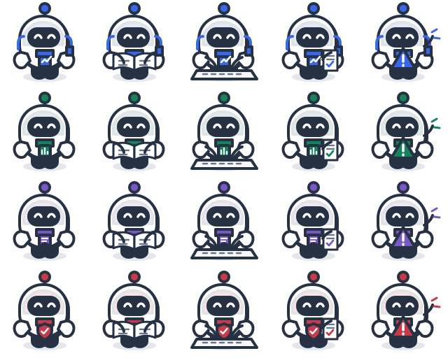

Desks
Top row: market terminal · portfolio ledger. Bottom row: research library · risk console.

Static production artwork. These spritesheets render directly in a browser, including when opened as a local file. Each row or desk set is identified below.
Rows: Maya · Adrian · Clara · Theo. Columns: idle · reading · typing · report-ready · attention.

Top row: market terminal · portfolio ledger. Bottom row: research library · risk console.